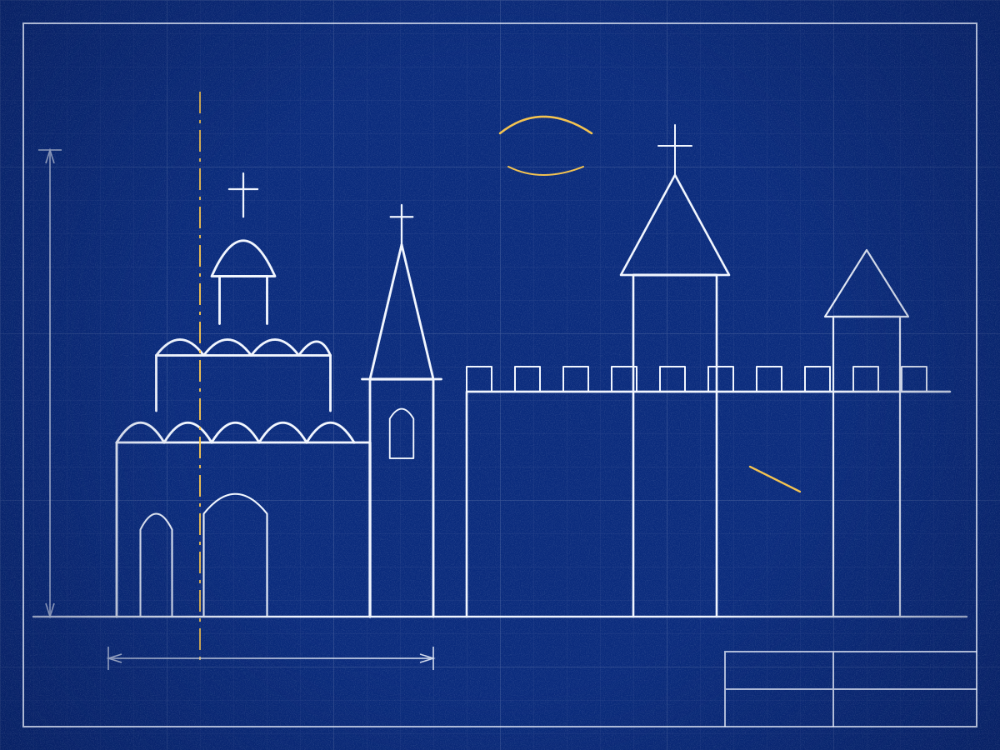
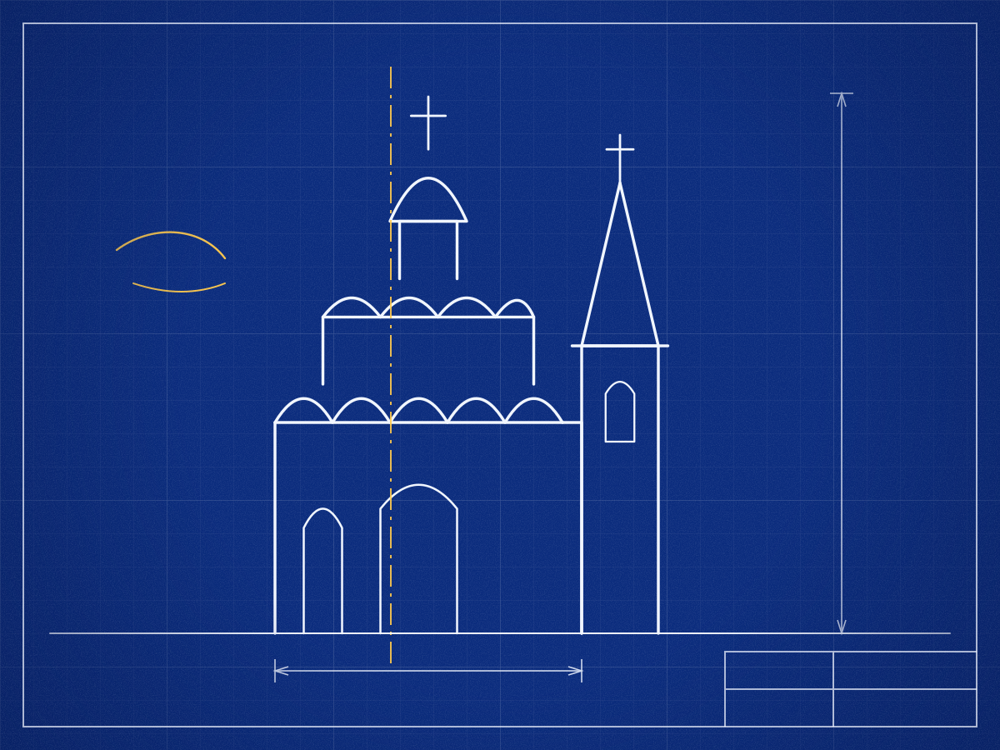
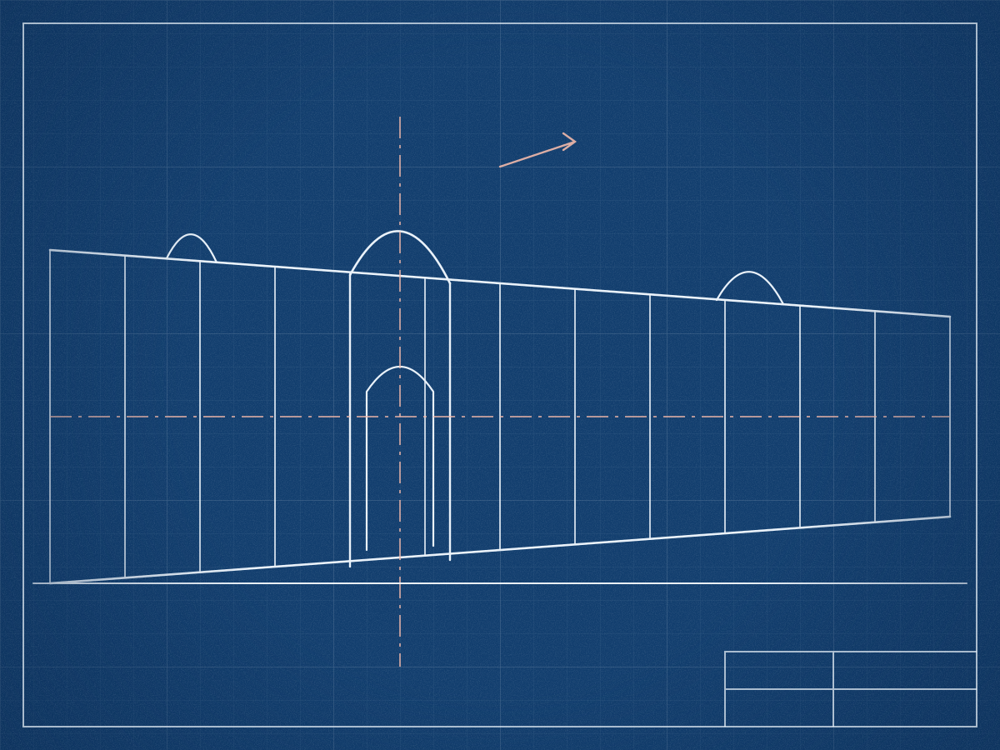
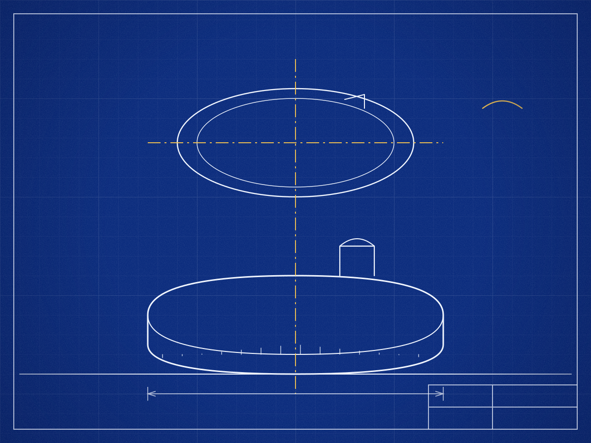

Река ушла в трубу
Неглинную спрятали под землю, а на её месте в 1819–1823 годах разбили Александровский сад.
1936 год. Красную площадь перестраивают, и в углу обмерной ведомости стоит резолюция: «Обмеры не затягивать: объекты идут под разборку». Чертёжница Ася меряет всё, что успевает.
Справка архива: часть записей вписал тот, кто не мерил, а под некоторыми строками — следы стёртого карандаша. Кто это сделал и зачем? Вы — обмерщик: перемерьте площадь и отделите настоящие записи от чужих.

Ася работает в бригаде обмерщиков и ведёт ведомость: строка на каждый объект, графы «Было», «Обмер», «Вернуть?». В ведомости она пишет тушью, на эскизах — карандашом.
Свой лист Ася сдала на два дня раньше срока, а потом он три дня лежал в конторе треста. Тушь одна, цифры похожи: по почерку строки не разделить. Разделить их может только обмер — камень с 1936 года не переписывали.
Поэтому на каждой точке вы сначала меряете сами, а потом открываете строку ведомости и видите, сходится она с натурой или нет. Рядом — пометка Аси с эскиза.
Ведомость держали трое. Чья рука вписала чужое, вы назовёте у последней строки. А последнюю графу Ася оставила вам.
Обмерная ведомость. Красная площадь и сад. 1936 г.
чертёжница Ася Л.
| Строка | Было | Обмер | Вернуть? |
|---|---|---|---|
| 1. Мост без реки | мост | ||
| 2. Зал без опор | манеж | ||
| 3. Стена или нет | грот | ||
| …ещё шесть строк |
Тому, кто будет возвращать: перемерьте за мной. Верьте камню и карандашу. И последнюю графу заполните сами.
«Сосчитала дважды. Второй раз — потому что не поверила первому»
Шесть мест из девяти, не по порядку — в эскизах Аси. Куда идти дальше, подскажет квест.

Белая башня перед Кремлём и каменный мост за ней. Что под этим мостом — проверьте сами.

Длинный фасад и огромный зал за ним. Обмерщику здесь есть что посчитать.

Говорят, это развалины древней крепостной стены. Проверьте по кладке.

Его не было на площади больше полувека. Сколько именно — посчитаете на месте.

Длинные ряды с главным входом посередине. Куда смотрит их ось?

Круглый каменный помост с самой мрачной славой на площади. Заслуженной ли?
Вы перемеряете площадь вслед за Асей: находите то, что повторяется, и считаете; сверяете натуру с эскизом Аси; проводите ось и смотрите, куда она ведёт; проверяете гипотезу по кладке.
После каждого обмера открывается строка ведомости с вердиктом: сходится или не сходится. Застряли — откройте приём обмерщика: их три, третий — готовый обмер с объяснением.
Один код доступа на всю компанию. Квест в разработке, о старте объявим в Telegram.
Три минуты от метро «Александровский сад». Квест открывается в браузере телефона.
На каждой точке меряете сами, а потом открываете строку: сходится она с натурой или нет.
Сначала разгадка по ведомости. Потом последняя графа: в ней нет верного ответа — есть ваш. Концовок две.
Площадь не раз перекраивали. Одно вернули, другое переставили, третье ушло под землю.
Неглинную спрятали под землю, а на её месте в 1819–1823 годах разбили Александровский сад.
Обелиск в саду поставили в 1914 году. Через четыре года одни имена с него стесали и высекли другие — среди них итальянца Кампанеллу и англичанина Томаса Мора.
Воскресенские ворота снесли, чтобы через площадь шла парадная техника, а памятник Минину и Пожарскому отодвинули от центра площади к Покровскому собору.
Казанский собор снесли. Архитектор Пётр Барановский успел обмерить его до сноса, и в 1990-е собор выстроили заново по его обмерам.
Ворота с часовней тоже восстановили. Икона часовни — копия иконы из Иверского монастыря на Афоне, в Греции.
Красная площадь и Александровский сад — самое сердце Москвы, у стен Кремля. Площадь не раз перестраивали, и многое из того, что на ней стоит сегодня, когда-то убирали и возвращали.
Квест начинается у Кутафьей башни, в трёх минутах от метро «Александровский сад», а заканчивается на Красной площади, в 10 минутах от метро «Площадь Революции».
Внутрь Кремля, в музеи и платные залы заходить не нужно: все загадки решаются снаружи.
Старт у Кутафьей башни, в трёх минутах от метро «Александровский сад». Финиш у памятника Минину и Пожарскому на Красной площади: до метро «Площадь Революции» около 10 минут.
По нашей оценке, 1,5–2 часа: 9 точек и около 2 км пешком.
Да. Основные загадки рассчитаны на взрослых и подростков, для младших есть задания по желанию. Страшных сцен в квесте нет.
990 ₽ за квест: один код доступа на всю компанию. Хватит одного телефона.
Квест в разработке. Дату запуска объявим в Telegram-канале «Дворами».
Нет. Все загадки решаются снаружи, на площади и в Александровском саду. Билеты не нужны.
Площадь иногда закрывают на парады, репетиции и концерты. Первая половина квеста проходит у Кремля и в саду, а финал — на самой площади. Если она закрыта, вторую половину лучше пройти в другой день.
Да. Квест открывается в браузере телефона, дорогу к точкам показывает карта. Зарядите телефон перед стартом.
Открыть приём обмерщика. Их три, и третий — готовый ответ с объяснением.
Квест в разработке, взять дело можно будет здесь. Напишем в Telegram, как только ведомость можно будет открыть.
Исторические факты на этой странице сверены по публикациям: